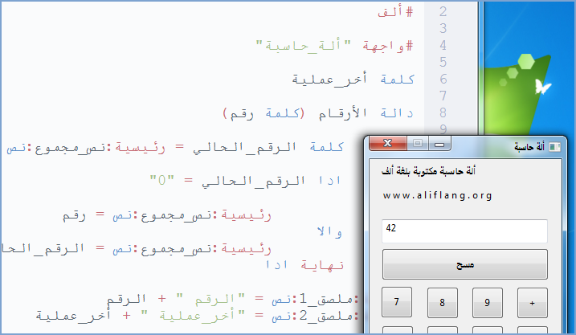
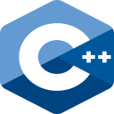
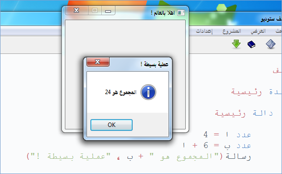
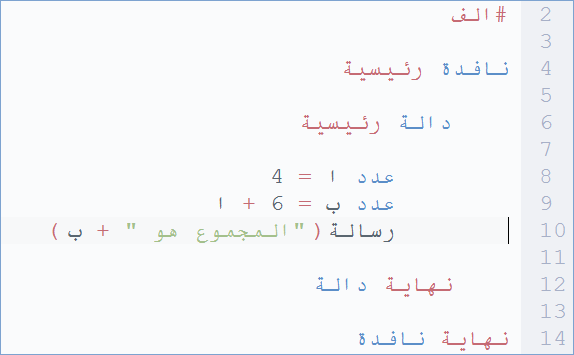

لغة البرمجة العربية ألف 2.0
مفتوحة المصدر، متعددة المنصات بواجهة احترافية، تدعم البايثون، جافا سكريبت، و سي بلاس بلاس

لماذا لغة برمجة عربية ؟
منذ ظهور أولى لغات البرمجة العربية سنة 1978، توالت محاولات تصميم لغات عربية لاكن كلها توقفت مند سنين، حتى ظهرت لغة ألف سنة 2018، مفتوحة المصدر، واضحة الفلسفة و الأهداف، فمؤسسها يقول أن الهدف هو تعليمي و ليس منافسة لغات البرمجة العالمية، و فلسفتها البدء من حيث انتهى الآخرون
ماهي لغة ألف ؟
لغة ألف (حرف أ)، هي لغة برمجة عربية مفتوحة المصدرعالية المستوىمنالجيل الثالث، صممت من طرفحسن دراكةفي كندا سنة 2018، و هي لغة برمجة تعليمية الأهداف، حيث توفر للطلبة الناطقين بالعربية أرضية سهلة لتعلم أسس البرمجة باللغة العربية
في سنة 2010، اتخذت قرار تطوير لغة برمجة عربية، من أجل تسهيل على الطلاب العرب تعلم مبادئ البرمجة بلغتهم الأم، فكرت في البداية بتطوير لغة برمجة حقيقية مستقلة بذاتها، أي أنها تترجم مباشرة إلى لغة التجميع، لكن هذا سيتطلب سنين طويلة من العمل و دعم من مؤسسات حكومية و فريق متكامل، فبدأت رحلة البحث عن أفظل طريقة ممكنة لتحقيق الهدف، في سنة 2017 قررت أن ابدأ من حيث انتهى الآخرون باستعمال لغة سي++، فشرعت لمدة سنة و نصف في تصميم لغة ألف ( أ )، عربية، سهلت القواعد، متعددة المنصات، و اليوم أضع هذا العمل المتواضع بين أيدي الطلاب العرب، و أتمنى أن تتحقق منه الفائدة، والله من وراء القصد
حسن دراكة-
ويندوز
ألف 2.0.14
ألف ستوديو (ويندوز)، هو عبارة عن مجموعة من التطبيقات مفتوحة المصدر، تعمل على نظام التشغيل ويندوز اكس بي فما فوق، هته التطبيقات تشكل بيئة تطوير متكاملة خاصة بلغة ألف، تسهل على المبرمجين كتابة تطبيقات و تحرير ملفات شيفرة ألف، و كذالك عملية تثبيت مترجم ألف، و القيام بالتحديث عبر الانترنت
لينكس
ألف 2.0.11
ألف ستوديو (كنو/لينكس)، هو عبارة عن مجموعة من التطبيقات مفتوحة المصدر، 32 و 64 بت، تعمل على نظام التشغيل جنو/لينكس، هته التطبيقات تشكل بيئة تطوير متكاملة خاصة بلغة ألف، تسهل على المبرمجين كتابة تطبيقات و تحرير ملفات شيفرة ألف، و كذالك عملية تثبيت مترجم ألف، و القيام بالتحديث عبر الانترنت
ماك أوس
ألف 1.22
ألف ستوديو (ماك أوس)، هو عبارة عن مجموعة من التطبيقات مفتوحة المصدر، تعمل على نظام التشغيل ماك أوس 10.9 فما فوق، هته التطبيقات تشكل بيئة تطوير متكاملة خاصة بلغة ألف، تسهل على المبرمجين كتابة تطبيقات و تحرير ملفات شيفرة ألف، و كذالك عملية تثبيت مترجم ألف، و القيام بالتحديث عبر الانترنت
تعليم
وثائق لغة البرمجة العربية ألف
الوثائق الرسمية لغة ألف، حيث يثم تحديثها باستمرار، تحتوي على كل ما يجتاحه المبرمج لتعلم البرمجة باستعمال لغة البرمجة العربية ألف
يوتوب : سلسلة تعليم لغة ألف
هذه سلسلة مرئية تعليمية لكيفية البرمجة بلغة ألف، باستعمال بيئة التطوير المتكاملة ألف ستوديو
! التعاون
إدا أعجبك مشروع لغة البرمجة العربية ألف، يمكنك المساهمة من أجل إزدهار و تقدم لغة ألف
حتى يستفيد منه أكبر عدد من الناس حول العالم
مساهمة إعلامية
إدا اعجبك مشروع لغة البرمجة العربية ألف، يمكنك أن تساهم في نشره من أجل تقدم لغة ألف، حتى يستفيد منه أكبر عدد من الناس حول العالم، عن طريق كتابة نبدة عن المشروع في صفحتك على الفيسبوك، تويتر، أو موقعك الخاص

مساهمة تقنية
مجتمع ألف يرحب بالمبرمجين المتطوعين الجدد اللدين يرغبون في الانظمام اليه من اجل تطوير مكتبات لغة ألف، عن طريق المساهمة بخبراتهم في البرمجة بلغةسي++و مكتباتوكس ويدجيتز
مجتمع ألفمساهمة مادية
مجتمع ألف، هو مجتمع منظم غير ربحي، مهمته هي حماية الحقوق الملكية الفكرية للغة ألف، و ادارة الموقع الرسمي و المنتدى على الانترنت، و تمويل ما يحتاجه المشروع للاستمرار، و كذالك تطوير اللغة و البرمجيات
مساهمة! تعرف أكثر
تعرف أكثر على لغة البرمجة العربية ألف

لغة ألف
لغة ألف (حرف أ)، هي لغة برمجة عربية مفتوحة المصدر،كائنية،مصرفة،عالية المستوىمنالجيل الثالث، تتميز بالبساطة و السهولة في استخدامها، صممت من طرفحسن دراكةفي كندا سنة 2018، و هي لغة برمجة تعليمية الأهداف، حيث توفر للطلبة الناطقين بالعربية أرضية سهلة لتعلم أسس البرمجة باللغة العربية

لماذا هدا المشروع ؟
منذ ظهور أولى لغات البرمجة العربية سنة 1978، توالت محاولات تصميم لغات برمجة عربية، لاكن جل هته المشاريع توقفت مند سنين، حتى ظهرت لغة ألف سنة 2018، مفتوحة المصدر، واضحة الفلسفة و الأهداف، فمؤسسها يقول أن الهدف هو تعليمي و ليس منافسة لغات البرمجة العالمية، و فلسفتها البدء من حيث انتهى الآخرون
الهدف هو تعليمي
إن تعليم الطلبة الغير الناطقين باللغة الإنجليزية مبادئ البرمجة يزيد من صعوبة التعليم، و قد يتسبب في مشاعر غضب نحو لغات البرمجة تلك، لذالك يجب أن تقوم لغة البرمجة المصممة لتعليم الطلبة بإزالة أي حاجز لغوي، و ما لغة ألف إلا واحدة من مئات لغات البرمجة التعليمية الغير إنجليزية في العالم
Educational Programming Languages
لغات البرمجة الغير إنجليزية
البدء من حيث انتهى الآخرون
إدا أردنا صناعة لغة برمجة من الصفر، لتوجب علينا صناعة لغة تترجم من لغةعالية المستوى(لغة ألف) إلى لغةمنخفضة المستوى(لغة التجميع)، و هذا يتطلب سنين طويلة من العمل و دعم من مؤسسات حكومية و فريق متكامل من خبراء عرب
بما أن المشروع بدأ بمجهود فردي، فظل مؤسس لغة ألف عدم اختراع العجلة و البدء من حيث انتهى الآخرون، حيث صمم لغة ألف لتترجم من لغةعالية المستوى(لغة ألف) إلى لغةعالية المستوىأخرى (سي++) ثم إلى لغةمنخفضة المستوى(لغة التجميع)، و استغرق هذا ثلاثة سنوات من العمل
هل لغة ألف هي مجرد ترجمة حرفية ؟
رغم أن لغة ألف مكتوبة بشكل كامل بلغةسي++، لن نجد أي علاقة بين لغة ألف و لغةسي++في الشكل، فمثلا لغة ألف تنتهي أوامرها بنهاية السطر، بينما لغةسي++تنتهي بـ ' ؛ '، كذالك لا يمكن نقل المعلومات بين متغيرين مختلفين، أو إنشاءواجهة رسوميةفيسي++إلا باستعمال مكتبات خاصة، بينما هي ممكنة و موجودة سلفا في لغة ألف، هذا كله لأن لغة ألف ليست ترجمة حرفية للغةسي++أو أية لغة أخرى، بل صممت بشكل خاص و متميز حتى يسهل على الطلبة تعلمها بسهولة
مثال عن لغة برمجة عربية تعتبر ترجمة حرفية للغة سي
هل يصح مقارنة لغة ألف بلغات إنجليزية عالمية ؟
لا يصح ذالك، و إلا ستكون مقارنة غير عادلة، لأن لغة ألف بدأت بمجهود فردي و هي في طور التطوير، بينما اللغات الإنجليزية العالمية صممت بمجهود عالمي من مختلف المؤسسات، الأصح هو مقارنة لغة ألف بلغات البرمجة العربية الأخرى، أو بلغات الغير إنجليزية العالمية
لغة البرمجة العربية إبداع (2015)
لغة البرمجة العربية العنقاء (2014)
لغة البرمجة العربية قلب (2012)
لغة البرمجة العربية سوبر نوفا (2010)
لغة البرمجة العربية عمورية (2008)
لغة البرمجة العربية ج (2007)
Non-English-based Programming Languages